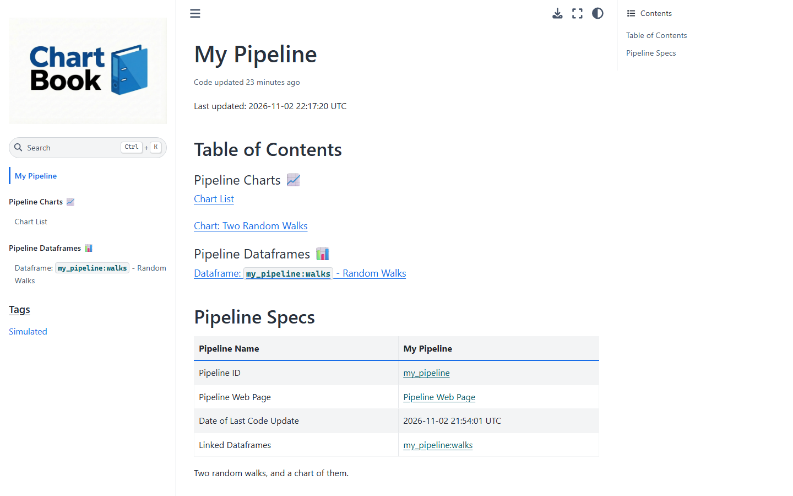
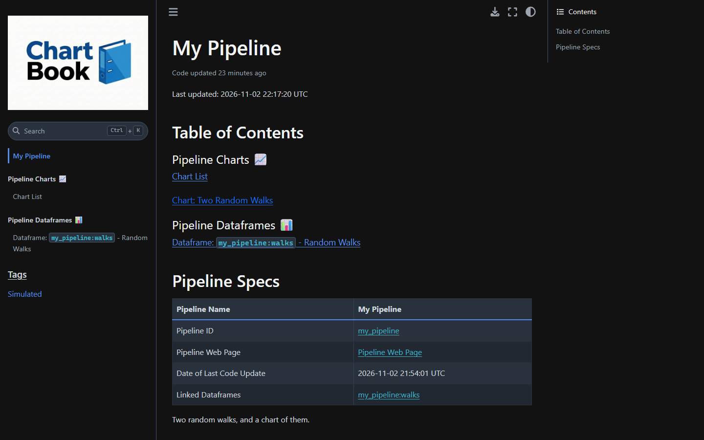
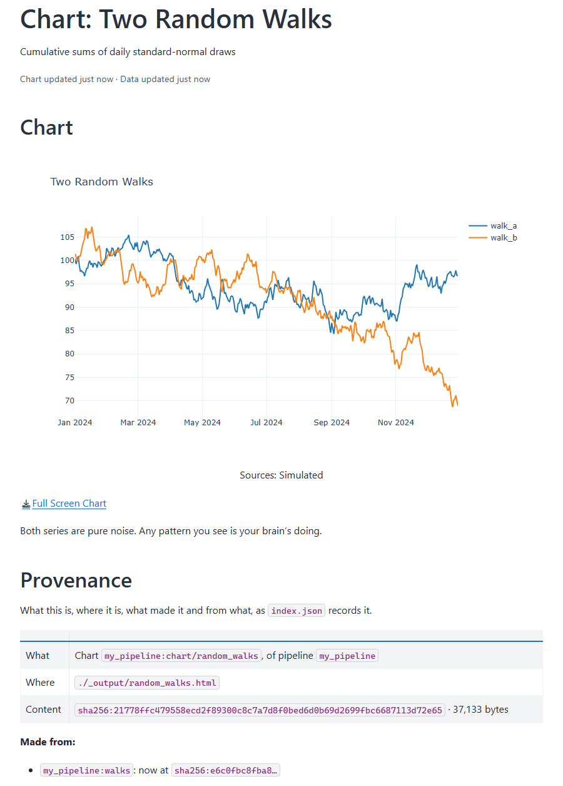
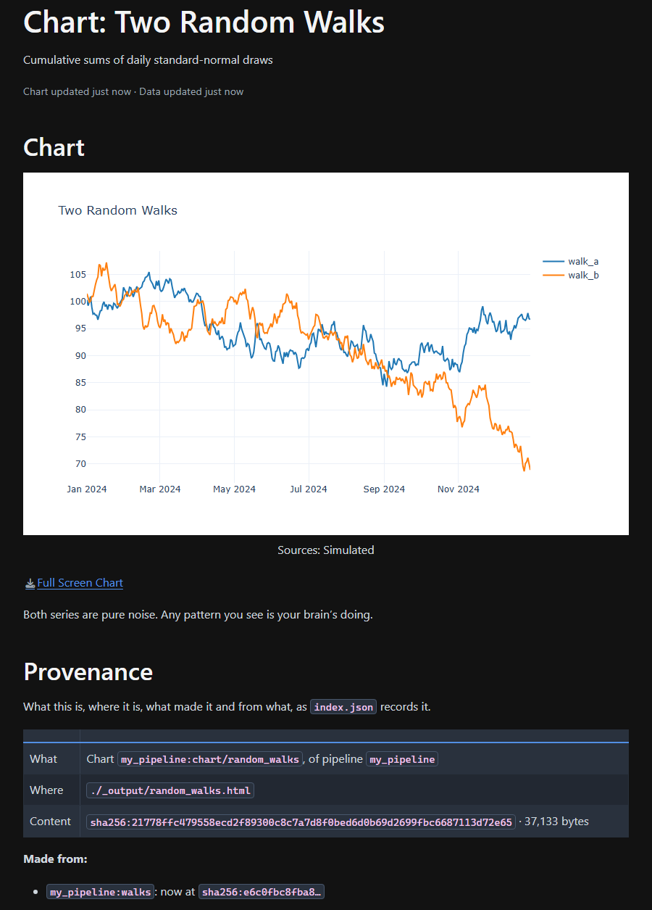
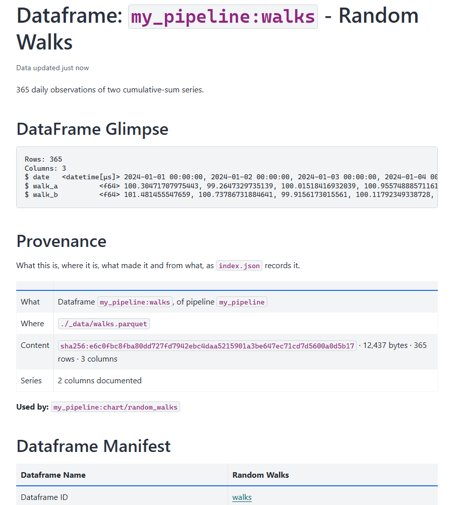
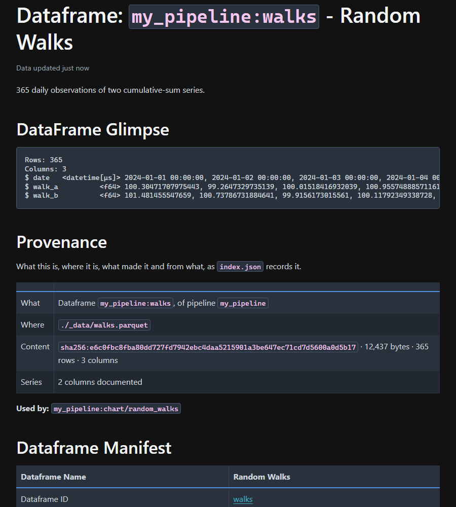

Quickstart#
In five minutes you will build a pipeline that makes a dataset and a chart, and a website that shows both, with a record of exactly what each one was made from.
You need Python 3.10 or newer, and git.
1. Make a folder and install ChartBook#
A pipeline is a folder. Make one, give it its own Python environment, and install ChartBook in it.
mkdir -p my-pipeline/src
cd my-pipeline
git init
python -m venv .venv
source .venv/bin/activate
pip install chartbook
mkdir my-pipeline\src
cd my-pipeline
git init
python -m venv .venv
.venv\Scripts\Activate.ps1
pip install chartbook
If PowerShell says running scripts is disabled, allow your own once with
Set-ExecutionPolicy -Scope CurrentUser RemoteSigned, and activate again.
mkdir my-pipeline\src
cd my-pipeline
git init
python -m venv .venv
.venv\Scripts\activate.bat
pip install chartbook
One install has everything: the command line, data loading, plotting and the site builder.
Using uv? uv venv and uv pip install chartbook do the same.
2. Say what the pipeline makes#
chartbook.toml is the pipeline’s manifest. It names each thing the pipeline makes, says
where it goes, and carries a short write-up of it. This one makes a dataframe, walks, and a
chart of it, random_walks. Save it in my-pipeline/:
[project]
name = "My Pipeline"
description = "A demo pipeline: two random walks and a chart of them"
[dataframes.walks]
name = "Random Walks"
description = "Two simulated random walk series"
sources = ["Simulated"]
path = "./_data/walks.parquet"
date_col = "date"
docs = "365 daily observations of two cumulative-sum series."
[charts.random_walks]
name = "Two Random Walks"
description = "Cumulative sums of daily standard-normal draws"
dataframe = "walks"
path = "./_output/random_walks.html"
docs = "Both series are pure noise. Any pattern you see is your brain's doing."
And a README.md beside it, which becomes the site’s front page:
And a .gitignore, so that git keeps the code and leaves out what it makes: chartbook snapshot
takes a pipeline only when everything in git is committed.
# What the pipeline makes, and its environment: git keeps the code, the store keeps the data
.venv/
_data/
_output/
docs/
3. Write the code that makes it#
ChartBook does not run your analysis for you, and does not care how it is written. Here it is one
Python script. It asks the manifest where walks goes instead of repeating the path:
import numpy as np
import pandas as pd
import chartbook
from chartbook import data
rng = np.random.default_rng(seed=42)
df = pd.DataFrame({
"date": pd.date_range("2024-01-01", periods=365, freq="D"),
"walk_a": rng.standard_normal(365).cumsum() + 100,
"walk_b": rng.standard_normal(365).cumsum() + 100,
})
df.to_parquet(data.path("walks")) # chartbook.toml says where "walks" goes
chartbook.plotting.line(
df, x="date", y=["walk_a", "walk_b"], title="Two Random Walks",
).save(chart_id="random_walks", output_dir="_output")
Run it from the my-pipeline folder:
python src/build_chart.py
It writes the dataset, _data/walks.parquet, and the chart in five files under _output/:
interactive HTML, and PNG and PDF in two sizes, ready for a paper or a slide.
4. Build the site#
chartbook docs build
The first time, ChartBook asks whether this folder is yours, since building a pipeline’s site can
run what its manifest names. It is: type y. Then open it:
chartbook docs open


Click Two Random Walks under Pipeline Charts, then the dataframe it names.
What just happened#
The manifest declared two assets, each with a name, a place and a write-up. Your code asked for
walksby name, so the path is written once.The build recorded everything it found in
docs/index.json, beside the site: an ID for each asset (my_pipeline:walks,my_pipeline:chart/random_walks), where it is, and a content hash of its bytes. The chart’s page reads that record: Made frommy_pipeline:walks, and the hash that dataset has in this build.The dataframe got a page of its own: its columns and first rows, its date range, and which charts use it.








Change the seed in build_chart.py, run it again and rebuild the site: the chart, the glimpse and
both hashes change with it.
Next#
Download a catalog of several pipelines built on public data, browse it, and point your agent at it.
Read another pipeline’s data, pinned to one of its snapshots, and let others read yours.
chartbook init scaffolds a project with a build script, notebooks and its own pages.
Notebooks, models, files, notes and your own pages: everything the manifest can describe.